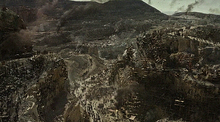

RTR: Imperium Surrectum
RTR: Imperium SurrectumMarble Extraction
3 levels, each replacing the one before it: you upgrade in place rather than building alongside.
Marble Pit (Industry) → Marble Quarry (Industry) → Marble Exports (Industry)
Levels at a glance
| Level | Cost | Build time | Minimum settlement | Upgrades to | Level | Cost | Build time | Minimum settlement | Upgrades to | ||
|---|---|---|---|---|---|---|---|---|---|---|---|
| Marble Pit (Industry) | 2,400 | 3 | town | Marble Quarry (Industry) | Marble Quarry (Industry) | 4,800 | 5 | large town | Marble Exports (Industry) | ||
| Marble Exports (Industry) | 14,400 | 12 | city | — |
Costs in denarii, build time in turns.
Marble Pit (Industry)

A small quarry is producing marble for local construction.
If the gods want temples, we’d better get digging!
A small marble pit has been established, where workers chip away at the finest stone the region has to offer, extracting blocks of stone from the earth to be worked by skilled masons and sculptors.
Though the work may be dusty and the blocks heavy enough to flatten a careless toe, each piece quarried here is destined for columns, statues, and temples fit for the gods. While the nobles feast, these labourers give shape to their grandest dreams. A simple pit it may be, but the future glory of cities rests on its stones.
It may not be glamorous, but those columns won’t build themselves.
| Cost | 2,400 denarii | Build time | 3 turns | Minimum settlement | town | Upgrades to | Marble Quarry (Industry) |
Requirements: all of these must hold before this level can be built.
- The region has Marble
- Only one heavy industry building per settlement: no other may already be built or being built here
- Government Building (Dependency, Indirect Rule, Direct Rule or Homeland)
What it does
- +1 trade income
- construction time bonus religious +10
- construction cost bonus religious +10
- construction time bonus other +10
- construction cost bonus other +5
- -1 public order (happiness)
Show 2 effects that apply only in some circumstances
- +3 taxable income, only when the region has Slave Trade or Slave Trading Hub (Urban) is built somewhere in your empire
- Tax bonus is due to local slave trade or factionwide supply, only when the region has Slave Trade or Slave Trading Hub (Urban) is built somewhere in your empire
Marble Quarry (Industry)

The marble quarry has expanded, supplying the region with high-quality stone.
More statues, more columns, more marble! The nobles’ taste knows no limit!
This quarry has grown in size, expanding into a thriving quarry, with more workers extracting marble at a faster pace. Just watch your toes when those blocks come down! They might be bound for palaces, but they’ll crush a careless soul faster than any general’s chariot.
Sculptors and architects flock to the site, eager to get their hands on the region’s finest stone. Marble blocks are cut and shaped to meet the lofty demands of those who believe beauty can be built.
This quarry may look rugged, but it produces a beauty rivaled only by the gods.
| Cost | 4,800 denarii | Build time | 5 turns | Minimum settlement | large town | Upgrades to | Marble Exports (Industry) |
Requirements: all of these must hold before this level can be built.
- You play a Phoenician, Caucasian, Anatolian, Egyptian, Iranian, Indian, Greek, Western Hellenistic, Eastern Hellenistic, Roman, Ethiopian, Arab, Libyan or Iberian faction
- The region has Marble
- Government Building (Dependency, Indirect Rule, Direct Rule or Homeland)
What it does
- +2 trade income
- construction time bonus religious +20
- construction cost bonus religious +20
- construction time bonus other +20
- construction cost bonus other +10
- -2 public order (happiness)
Show 2 effects that apply only in some circumstances
- +6 taxable income, only when the region has Slave Trade or Slave Trading Hub (Urban) is built somewhere in your empire
- Tax bonus is due to local slave trade or factionwide supply, only when the region has Slave Trade or Slave Trading Hub (Urban) is built somewhere in your empire
Marble Exports (Industry)

Marble is now being exported on a grand scale, renowned for its quality and beauty.
Why settle for mere bricks when you can build with the finest marble in the world?
This region has become a famed exporter of fine quality marble, the stone that makes an empire glorious!"
Marble cut here is destined for statues that stand tall, palaces that gleam, and temples that withstand the ages. Rich and poor alike gaze upon these monuments in awe. From towering obelisks to statues honoring long-forgotten heroes, the blocks quarried here build legacies that will echo through the halls of time. Each marble slab shipped from this quarry carries with it the weight of history and the promise of greatness. Traders and craftsmen come from far and wide to purchase these pristine stones, eager to craft statues and palaces worthy of legend.
Marble from here brings not only beauty to distant cities but wealth to the region, as even the humblest townsfolk find their coffers heavy with coin.
And the capital? It stands taller, its halls clad in marble that reflects the glory of its rulers.
| Cost | 14,400 denarii | Build time | 12 turns | Minimum settlement | city |
Requirements: all of these must hold before this level can be built.
- You play a Phoenician, Caucasian, Anatolian, Egyptian, Iranian, Indian, Greek, Western Hellenistic, Eastern Hellenistic, Roman, Ethiopian, Arab, Libyan or Iberian faction
- Local Market or a higher level is built here
- Trading Port (River Ports or Ports) or River Port or above
- The region has Marble
- No Marble Exports (Industry) is built anywhere in your empire
- Direct Rule or Homeland
What it does
- +3 trade income
- construction time bonus religious +25
- construction cost bonus religious +20
- construction time bonus other +20
- construction cost bonus other +15
- -3 public order (happiness)
- (Capital) Civic buildings constr. cost reduction: -10%
Show 2 effects that apply only in some circumstances
- +10 taxable income, only when the region has Slave Trade or Slave Trading Hub (Urban) is built somewhere in your empire
- Tax bonus is due to local slave trade or factionwide supply, only when the region has Slave Trade or Slave Trading Hub (Urban) is built somewhere in your empire